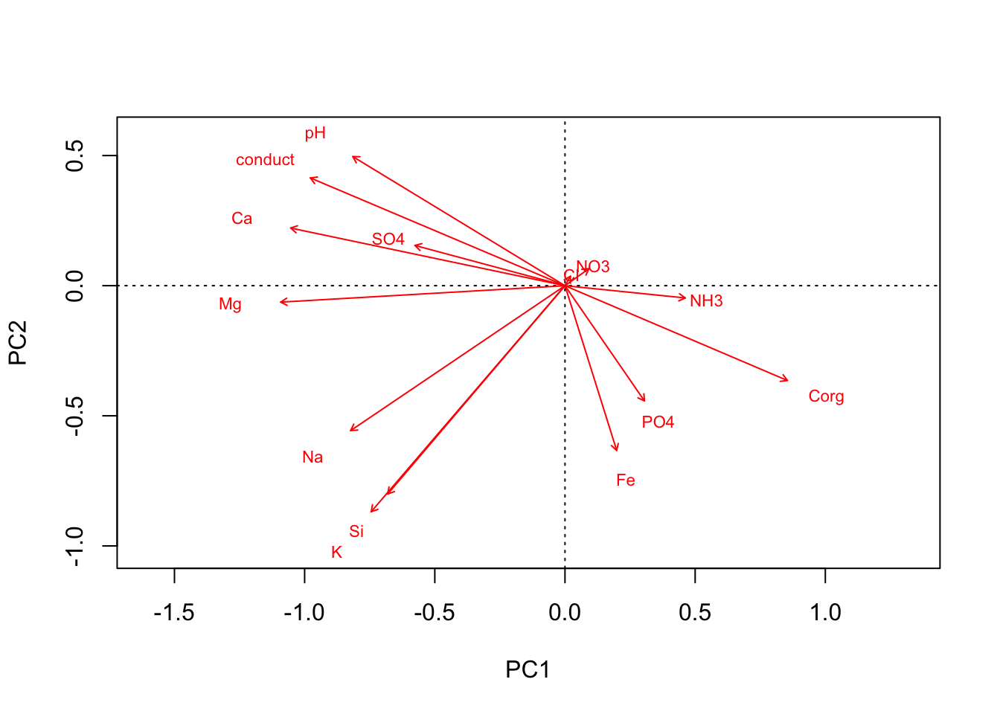
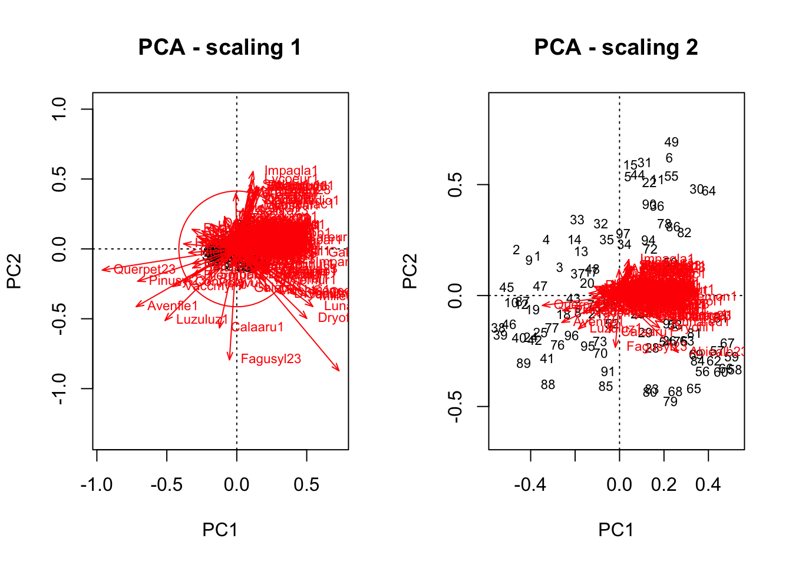

这里以一个湿地物种组成的数据为例来看物种组成和环境条件之间的关系。数据包含植物组成和湿地水环境化学组成。
library(vegan)## Loading required package: permute## Loading required package: lattice## This is vegan 2.4-4chem <- read.delim('https://raw.githubusercontent.com/zdealveindy/anadat-r/master/data/chemistry.txt', row.names = 1)
chem <- chem[,-15] # removes slope, which is not chemical variables
PCA <- rda(chem,scale = T) #the argument scale standarizes the variables
head(summary(PCA))##
## Call:
## rda(X = chem, scale = T)
##
## Partitioning of correlations:
## Inertia Proportion
## Total 14 1
## Unconstrained 14 1
##
## Eigenvalues, and their contribution to the correlations
##
## Importance of components:
## PC1 PC2 PC3 PC4 PC5 PC6 PC7
## Eigenvalue 4.3861 1.8311 1.6322 1.21612 0.92221 0.89790 0.72924
## Proportion Explained 0.3133 0.1308 0.1166 0.08687 0.06587 0.06414 0.05209
## Cumulative Proportion 0.3133 0.4441 0.5607 0.64754 0.71341 0.77755 0.82963
## PC8 PC9 PC10 PC11 PC12 PC13
## Eigenvalue 0.63060 0.53379 0.40476 0.29093 0.22711 0.18121
## Proportion Explained 0.04504 0.03813 0.02891 0.02078 0.01622 0.01294
## Cumulative Proportion 0.87468 0.91280 0.94172 0.96250 0.97872 0.99166
## PC14
## Eigenvalue 0.11672
## Proportion Explained 0.00834
## Cumulative Proportion 1.00000
##
## Scaling 2 for species and site scores
## * Species are scaled proportional to eigenvalues
## * Sites are unscaled: weighted dispersion equal on all dimensions
## * General scaling constant of scores: 5.574992
##
##
## Species scores
##
## PC1 PC2 PC3 PC4 PC5 PC6
## Ca -1.2395 0.26073 -0.08279 0.07019 -0.21455 0.31631
## Mg -1.2847 -0.07431 0.03779 -0.03741 -0.05047 0.34011
## Fe 0.2337 -0.74467 -0.18301 0.91026 -0.36570 0.12707
## K -0.8757 -1.02193 0.02213 -0.23047 0.24166 -0.06626
## Na -0.9686 -0.65514 -0.03874 0.17597 0.40968 -0.29167
## Si -0.8009 -0.94159 0.13567 -0.40204 -0.33330 0.26581
## ....
##
##
## Site scores (weighted sums of species scores)
##
## PC1 PC2 PC3 PC4 PC5 PC6
## 1 -1.298386 -1.6531 0.32020 -0.410813 -0.27795 1.1076
## 2 0.331266 0.3436 0.87967 -0.112347 0.05342 -0.5761
## 3 -0.578705 1.0812 -0.49588 -0.339626 0.30775 -0.4156
## 4 -0.517608 1.1056 0.04964 0.101172 0.03688 0.1731
## 5 -0.759527 -0.1386 0.32003 -0.230092 -0.74608 0.2601
## 6 -0.004093 0.7204 0.44371 0.005363 0.04296 -0.2904
## ....从结果上看总的变异为14， 第一轴解释了4.3861， 即解释了31%。在这里，因为我们对所有的变量进行过标准化处理（即每一个变量的均值为0，标准差为1）。我们一共包含14个变量，即总变异为14.
stand.chem <- scale(chem)
stand.chem.var <- apply(stand.chem, 2, var)
stand.chem.var## Ca Mg Fe K Na Si SO4 PO4 NO3
## 1 1 1 1 1 1 1 1 1
## NH3 Cl Corg pH conduct
## 1 1 1 1 1sum(stand.chem.var)## [1] 14如果想进一步知道每一个变量对于第一轴和第二轴到底贡献了多少我们可以利用score
loadings <- scores(PCA, display = "species", scaling = 0)
loadings## PC1 PC2
## Ca -0.397207108 0.12931763
## Mg -0.411695240 -0.03685437
## Fe 0.074879310 -0.36934346
## K -0.280639035 -0.50686184
## Na -0.310399857 -0.32493807
## Si -0.256661125 -0.46701175
## SO4 -0.217276338 0.09023013
## PO4 0.115086359 -0.25838198
## NO3 0.034618703 0.03814265
## NH3 0.174227393 -0.02750712
## Cl 0.007920445 0.02129442
## Corg 0.322058906 -0.21255537
## pH -0.307202160 0.28944051
## conduct -0.368754666 0.24163441
## attr(,"const")
## [1] 5.574992注意如果在这里不进行变量的标准化，可能会引发一些问题。如果某一变量本身数值较大，其变异程度可能也会很大，这会影响整体分析。另外，具体画图可以适用biplot功能
biplot(PCA, display = "species", scaling = "species")
怎么去理解这个结果？我们可以把第一轴看作是养分轴，即poor-rich gradient.
另一个栗子:对数据进行转化的情况.这里我们介绍一个在进行pca分析前对数据进行hellinger转化。 套路：读入数据 —— 数据转化 —— pca分析 —— 做图
vltava.spe <- read.delim ('https://raw.githubusercontent.com/zdealveindy/anadat-r/master/data/vltava-spe.txt', row.names = 1)
vltava.spe.hel <- decostand(log1p(vltava.spe), "hellinger")
tbPCA <- rda(vltava.spe.hel)
source ('http://www.davidzeleny.net/anadat-r/doku.php/en:numecolr:cleanplot.pca?do=export_code&codeblock=0') # define the cleanplot.pca function## Warning in file(filename, "r", encoding = encoding): "internal" method
## cannot handle https redirection to: 'https://www.davidzeleny.net/anadat-r/
## doku.php/en:numecolr:cleanplot.pca?do=export_code&codeblock=0'## Warning in file(filename, "r", encoding = encoding): "internal" method
## failed, so trying "libcurl"## Warning in file(filename, "r", encoding = encoding): "internal" method
## cannot handle https redirection to: 'https://www.davidzeleny.net/anadat-r/
## doku.php/en:numecolr:cleanplot.pca?do=export_code&codeblock=1'## Warning in file(filename, "r", encoding = encoding): "internal" method
## failed, so trying "libcurl"cleanplot.pca(tbPCA) 多说一句，上图中的scaling 1 和 2啥意思呢？ 左图为1的情况，即关注点在对象（或者理解为不同站点，数据中的排）。右图为2的情况，即关注点在描述某一站点的组分（或者理解为物种，即数据中的列）。